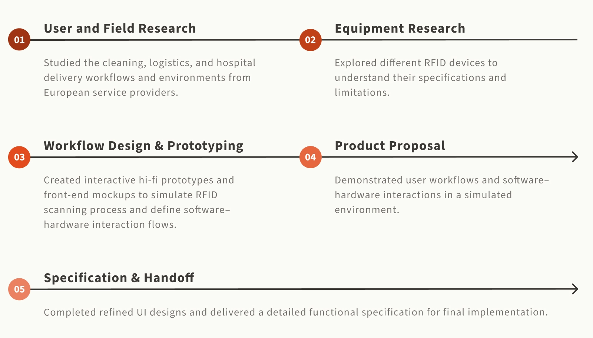
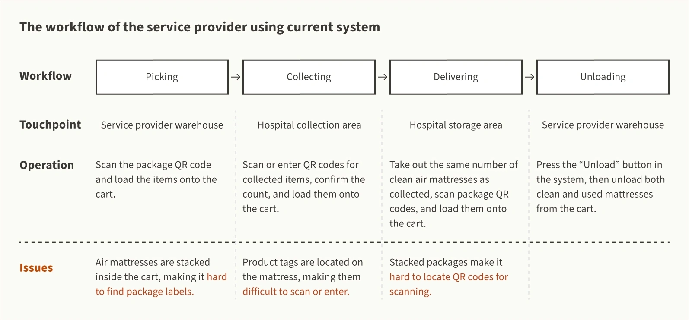
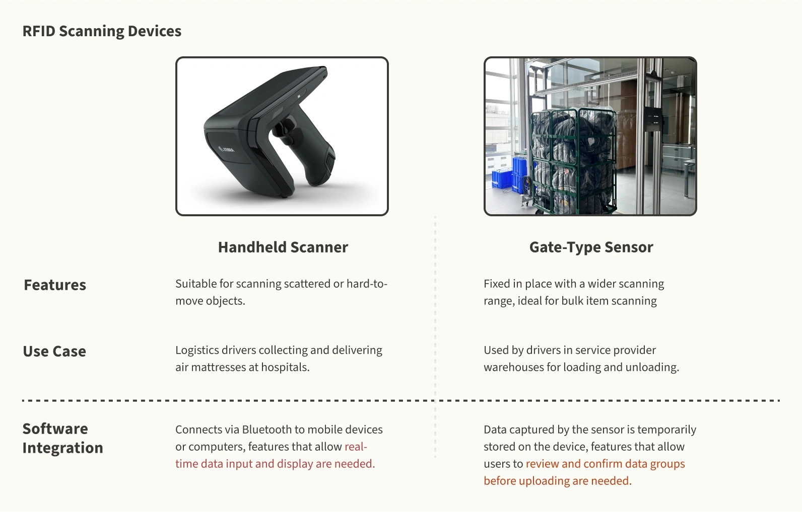
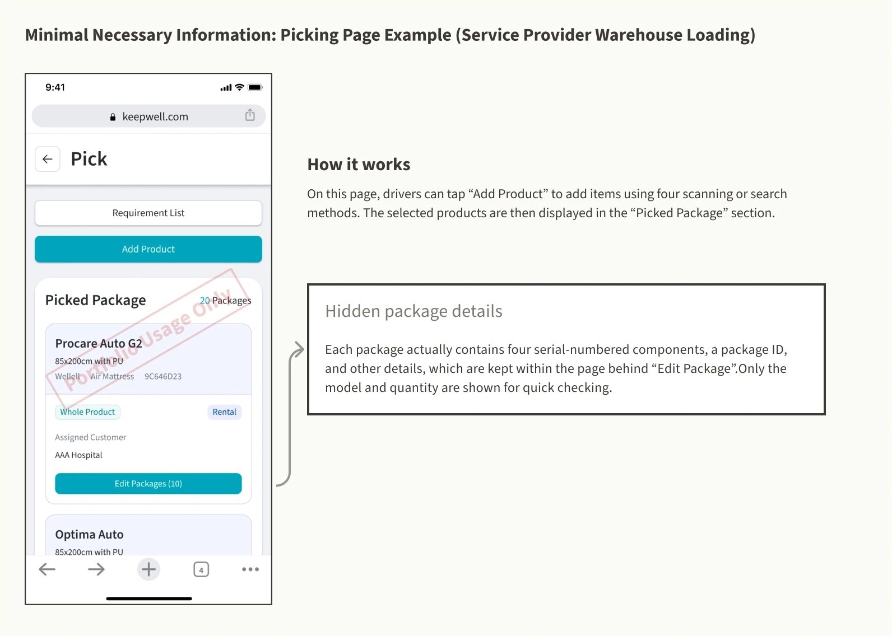
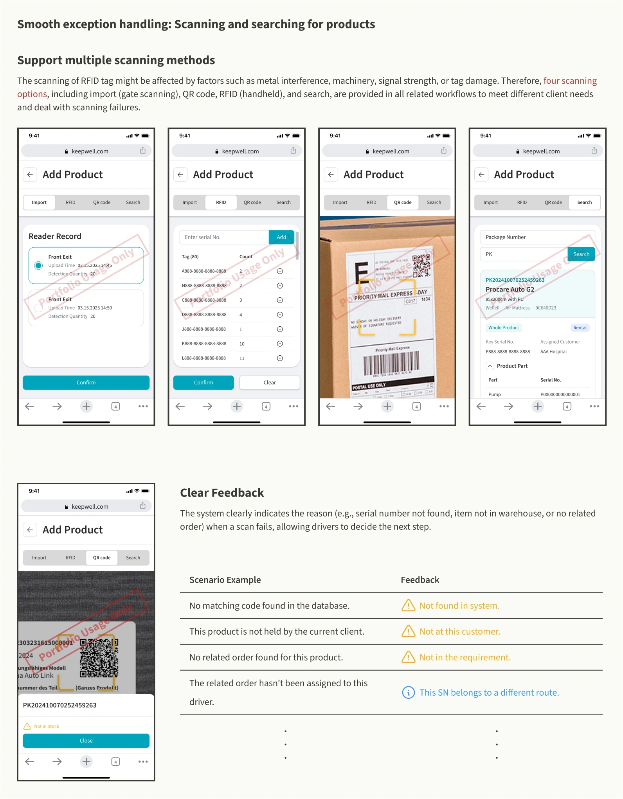
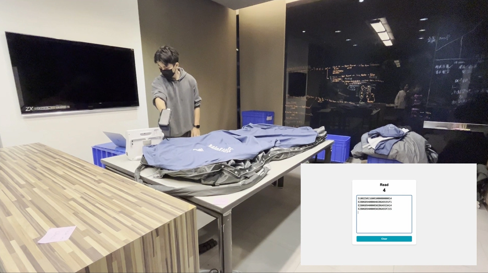
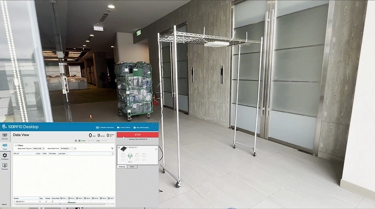
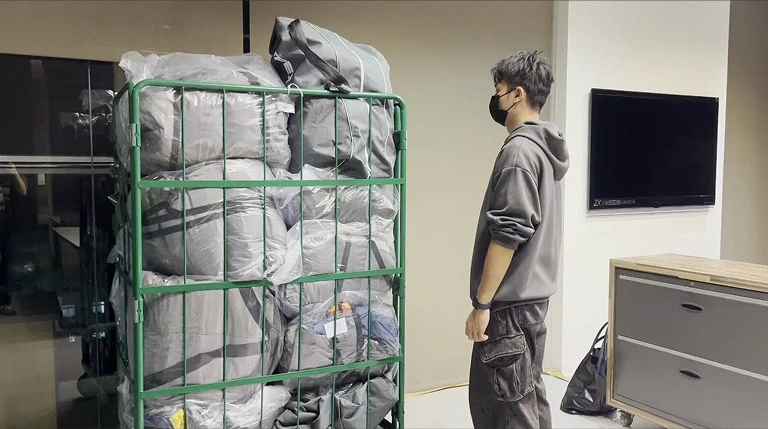
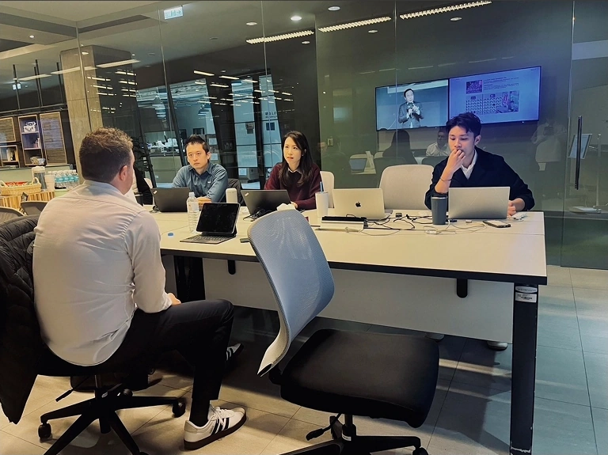
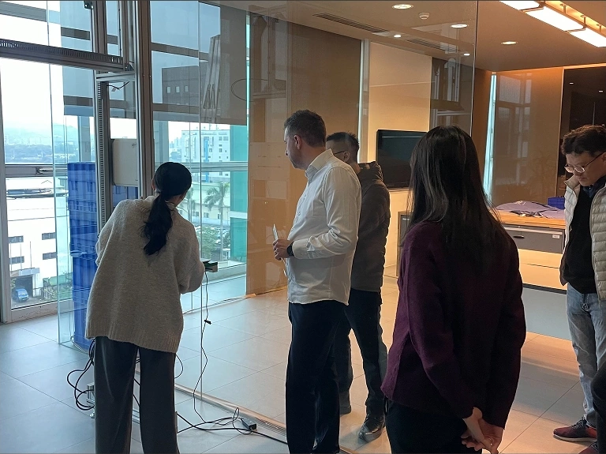

Business Goal: Increase client base and revenue
Aims to improve customer satisfaction and strengthen market competitiveness.
This project is under an NDA, so detailed information cannot be shared on public platforms.
KeepWell is a SaaS platform designed to streamline the decontamination and rental management of medical equipment, currently focusing on medical air mattresses. By combining QR code asset tags with medical devices, it helps European service providers manage their entire process — from on-site inventory and disinfection to orders, logistics, and customer management.
After meeting with a service provider, we found that their logistics workflow was not well suited for QR code scanning. Since QR code asset tags require users to locate and visually access the tag to scan it, it's impossible for the service provider who transports air mattresses in bulk using cage carts.

Frequent scanning reduce delivery and collection efficiency.
Nurses usually don't stack collected air mattresses neatly, instead, they're scattered in the return area. Drivers typically confirm them by sight and load them directly onto the cart without counting each item one by one.
Stacked products makes it difficult to locate asset tags.
Some service providers stack air mattresses in metal cage carts where QR codes are not always visible, making it impossible for drivers to scan every code.


Aims to improve customer satisfaction and strengthen market competitiveness.

Provide end-to-end RFID asset tracking across logistics and warehouse operations.

Enable users to quickly switch between scanning modes on mobile devices and provide clear prompts when unexpected situations occur during scanning.
Through on-site research at service provider's facilities, we found that the logistics workflow required two types of RFID scanners. KeepWell needed to support both scanning methods to meet different usage scenarios and improve operational efficiency.

According to our research, service providers focus on two key tracking points in logistics, when air mattresses are delivered to hospitals and when they are collected by drivers, which serve as the basis for rental billing. For drivers, the main concern on-site is the number of collected mattresses, ensuring the same number of clean ones are delivered.
Therefore, I integrated the RFID feature into the logistics module based on two design principles:


We recreated the environments of service providers and hospitals based on the user journey map, building a simulated field and an interactive prototype to test design concepts.



To validate the concept, we demonstrated different RFID scanning methods and results using a simulated work environment. Through the proposal presentation, we outlined the software development roadmap and implementation plan. The client later confirmed the purchase agreement in the second half of 2025.


Our research revealed that both service providers and hospitals often bypass certain steps we initially considered important, such as rechecking product serial numbers, logging precise return times, or inspecting product conditions on-site, simply to keep everything faster. This showed that the interface we originally designed to reduce errors and improve data accuracy, based on general usability principles, ended up being unnecessarily complex.
In the original system design, modifying any module could cause the entire workflow to fail due to the tightly coupled data between modules. As a result, we had to put significant effort into restructuring the system to meet the service provider's needs by making each module independently modifiable.
From this experience, we should design with modular integration in mind when serving users with diverse workflows, enabling quick adaptation to different operational processes without costly redesigns.
Design System Architecture Design and Organization